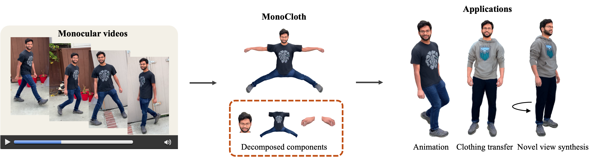
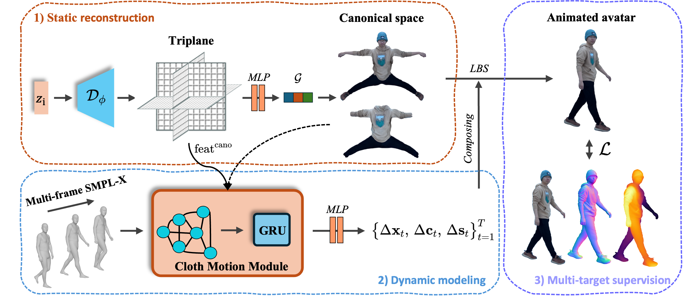

MonoCloth: Reconstruction and Animation of Cloth-Decoupled Human Avatars from Monocular Videos
S-Lab, Nanyang Technological University, Singapore
✉ Corresponding author
AAAI 2026
Abstract

Reconstructing realistic 3D human avatars from monocular videos is a challenging task due to the limited geometric information and complex non-rigid motion involved. We present MonoCloth, a new method for reconstructing and animating clothed human avatars from monocular videos. To overcome the limitations of monocular input, we introduce a part-based decomposition strategy that separates the avatar into body, face, hands, and clothing. This design reflects the varying levels of reconstruction difficulty and deformation complexity across these components. Specifically, we focus on detailed geometry recovery for the face and hands. For clothing, we propose a dedicated cloth simulation module that captures garment deformation using temporal motion cues and geometric constraints. Experimental results demonstrate that MonoCloth improves both visual reconstruction quality and animation realism compared to existing methods. Furthermore, thanks to its part-based design, MonoCloth also supports additional tasks such as clothing transfer, underscoring its versatility and practical utility.
MonoCloth Pipeline

Citation
@article{jin2025monocloth,
title={MonoCloth: Reconstruction and Animation of Cloth-Decoupled Human Avatars from Monocular Videos},
author={Jin, Daisheng and He, Ying},
journal={arXiv preprint arXiv:2508.04505},
year={2025}
}